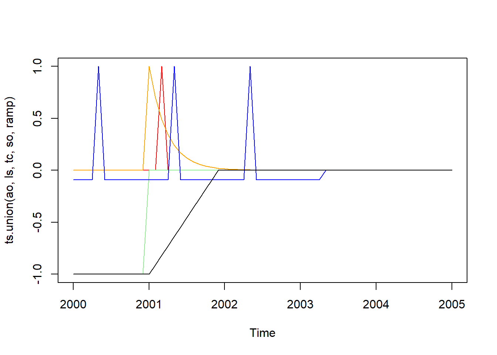

#install.packages("remotes")
remotes::install_github("palatej/rjd3toolkit")
remotes::install_github("palatej/rjd3modelling")
remotes::install_github("palatej/rjd3sa")
remotes::install_github("palatej/rjd3arima")
remotes::install_github("palatej/rjd3x13")
remotes::install_github("palatej/rjd3tramoseats")
remotes::install_github("palatej/rjdemetra3")
remotes::install_github("palatej/rjdfilters")
remotes::install_github("palatej/rjd3sts")
remotes::install_github("palatej/rjd3highfreq")
remotes::install_github("palatej/rjd3stl")
remotes::install_github("palatej/rjd3bench")
remotes::install_github("AQLT/ggdemetra3")R packages
Available algorithms
| Domain | Algorithm | Package | Comments | |
|---|---|---|---|---|
| Seasonal Adjustment | X13-Arima | |||
| Tramo-Seats | ||||
| rjd3highfreq | ||||
| STL() | rjd3stl | |||
| Basic Structural Models | rjd3sts | |||
| Trend estimation | Moving Averages, Local Polynomial | rjdfilters | ||
| idem | rjd3highfreq | |||
| Benchmarking and TD | rjd3bench | |||
Organisation overview
a suite (order)
dependencies
utility packages
general output organisation
Installation procedure
Below you will find a comprehensive list and main functions by categories
for detailed function, you can refer to each package’s own R documentation
Utility packages
rjd3toolkit
Contains several utility functions used in other rjd packages and several functions to perform test.
Utility
Tests - Normality tests: Bowman-Shenton (bowmanshenton()), Doornik-Hansen (doornikhansen()), Jarque-Bera (jarquebera())
Runs tests (randomness of data): mean or the median (
testofruns()) or up and down runs test (testofupdownruns())autocorrelation functions (usual, inverse, partial)
aggregate()to aggregate a time series to a higher frequency
Example
library(rjd3toolkit)
set.seed(100)
x = rnorm(1000);y = rlnorm(1000)
bowmanshenton(x) # normal distribution
bowmanshenton(y) # log-normal distribution
testofruns(x) # random data
testofruns(y) # random data
testofruns(1:1000) # non-random data
autocorrelations(x)
autocorrelations.inverse(x)
autocorrelations.partial(x)rjd3modelling
Purpose : creating input variables (regressors) for to be used in Reg-Arima
create user-defined calendar and trading-days regressors:
calendar.new()(create a new calendar),calendar.holiday()(add a specific holiday, e.g. christmas),calendar.easter()(easter related day) andcalendar.fixedday())outliers regressors (AO, LS, TC, SO, Ramp, intervention variables), calendar related regressors (stock, leap year, periodic dummies and contrasts, trigonometric variables) -> to be added quadratic ramps
Range-mean regression test (to choose log transformation), Canova-Hansen (
td.ch()) and trading-days f-test (td.f())specification functions for
rjd3x13andrjd3tramoseats
more explanations and example needed here
Example of calendar specification
library(rjd3modelling)
fr_cal <- calendar.new()
calendar.holiday(fr_cal, "NEWYEAR")
calendar.holiday(fr_cal, "EASTERMONDAY")
calendar.holiday(fr_cal, "MAYDAY")
calendar.fixedday(fr_cal, month = 5, day = 8,
start = "1953-03-20")
# calendar.holiday(fr_cal, "WHITMONDAY") # Equivalent to:
calendar.easter(fr_cal, offset = 61)
calendar.fixedday(fr_cal, month = 7, day = 14)
# calendar.holiday(fr_cal, "ASSUMPTION")
calendar.easter(fr_cal, offset = 61)
calendar.holiday(fr_cal, "ALLSAINTSDAY")
calendar.holiday(fr_cal, "ARMISTICE")
calendar.holiday(fr_cal, "CHRISTMAS")Use holidays() to get the days of the holidays and htd() to get the trading days regressors
holidays(fr_cal, "2020-12-24", 10,single = T) [,1]
2020-12-24 0
2020-12-25 1
2020-12-26 0
2020-12-27 0
2020-12-28 0
2020-12-29 0
2020-12-30 0
2020-12-31 0
2021-01-01 1
2021-01-02 0s = ts(0, start = 2020, end = c(2020, 11), frequency = 12)
# Trading-days regressors (each day has a different effect, sunday as contrasts)
td_reg <- htd(fr_cal, s = s, groups = c(1, 2, 3, 4, 5, 6, 0))
# Working-days regressors (Monday = ... = Friday; Saturday = Sunday = contrasts)
wd_reg <- htd(fr_cal, s = s, groups = c(1, 1, 1, 1, 1, 0, 0))
# Monday = ... = Friday; Saturday; Sunday = contrasts
wd_reg <- htd(fr_cal, s = s, groups = c(1, 1, 1, 1, 1, 2, 0))
wd_reg group-1 group-2
Jan 2020 2.0000000 0.0000000
Feb 2020 0.0000000 1.0000000
Mar 2020 -1.7809251 -0.7968209
Apr 2020 0.7809251 -0.2031791
May 2020 -3.1554920 0.4740847
Jun 2020 5.1554920 0.5259153
Jul 2020 2.0000000 0.0000000
Aug 2020 -4.0000000 0.0000000
Sep 2020 2.0000000 0.0000000
Oct 2020 2.0000000 1.0000000
Nov 2020 0.0000000 0.0000000Example of outliers
s = ts(0, start = 2000, end = 2005, frequency = 12)
ao = ao.variable(s = s, date = "2001-03-01")
ls = ls.variable(s = s, date = "2001-01-01")
tc = tc.variable(s = s, date = "2001-01-01", rate = 0.7)
so = so.variable(s = s, date = "2003-05-01")
ramp = ramp.variable(s = s, range = c("2001-01-01","2001-12-01"))
plot(ts.union(ao, ls, tc, so, ramp), plot.type = "single",
col = c("red","lightgreen","orange","blue","black"))